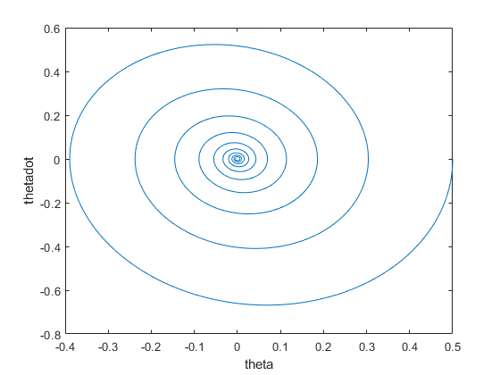
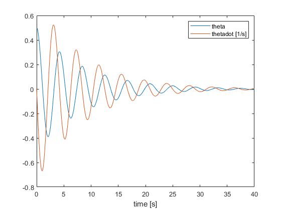

Contents
clear all
close all
clc
X0 = [.5;0];
g = 9.8;
l = 1;
p = .25;
m = 1;
B = .5;
tspan = [0,40];
options = odeset('RelTol', 1e-8,'AbsTol',1e-8);
[t,X]=ode45(@eom,tspan,X0,options,l,p,B,m,g);
figure
plot(X(:,1),X(:,2))
xlabel("theta")
ylabel("thetadot")
figure
plot(t,X(:,1),t,X(:,2))
legend("theta","thetadot [1/s]")
xlabel("time [s]")
 
multiple ps
ps = -.25:.125:.25;
n = length(ps);
X0 = [.5;0];
g = 9.8;
l = 1;
m = 1;
B = .5;
tspan = [0,40];
options = odeset('RelTol', 1e-8,'AbsTol',1e-8);
runs = {};
for i = 1:n
p = ps(i);
[t,X]=ode45(@eom,tspan,X0,options,l,p,B,m,g);
runs{i,1} = X;
runs{i,2} = t;
end
figure
hold on
for i = 1:n
plot3(runs{i,1}(:,1),runs{i,1}(:,2),runs{i,2})
end
xlabel("theta")
ylabel("thetadot [1/s]")
legend("p = "+string(ps))
temp1 = " theta";
temp2 = [];
figure
hold on
for i = 1:n
plot(runs{i,2},runs{i,1}(:,1));
temp2 = [temp2,"p = "+string(ps(i))+temp1];
end
legend(temp2)
xlabel("time [s]")
clear temp2 temp1
temp1 = " thetadot";
temp2 = [];
figure
hold on
for i = 1:n
plot(runs{i,2},runs{i,1}(:,2));
temp2 = [temp2,"p = "+string(ps(i))+temp1];
end
legend(temp2)
xlabel("time [s]")
ylabel("[1/s]")
clear temp2 temp1
functions
function Xdot = eom(t,X,l,p,B,m,g);
theta = X(1);
thetadot = X(2);
Xdot = [
thetadot
-p*g*(sin(theta))/(l^2+p^2) - B*thetadot/(2*m*(l^2+p^2));
];
end